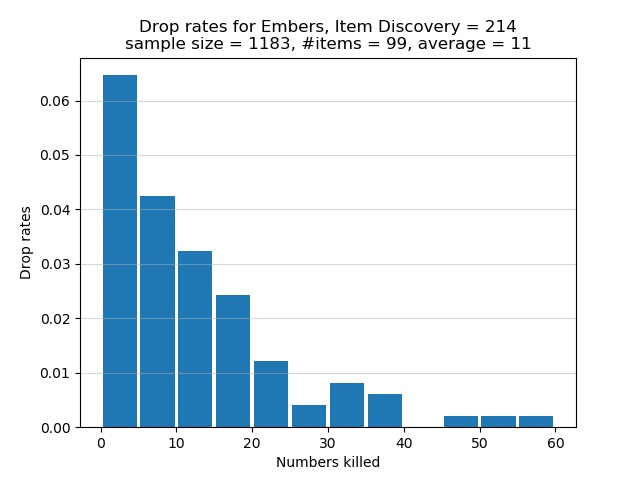

High Wall of Lothric
Early in the game while you are still at the High Wall of Lothric and have not yet reached the Undead Settlement, you should have picked up 2 Embers at Cemetery of Ash. The 5 Embers at the High Wall of Lothric include 2 from the 2 Pus of Men (1 each) the first time you kill them. The Shrine Handmaid sells 3 Embers for 2,500 souls each. After you have rescued Greirat and talked to him at Firelink Shrine, he sells 3 Embers for 2,000 souls each.
The first time you kill a Pus of Man, you are guaranteed an Ember. From the second time onward the drop is rare, the true drop rate being 5% per Pus of Man according to the table
If you have 214 Item Discovery, your chance of a drop is 10.7%. This isn't as great as it sounds. There are only 2 Pus of Men and the route from one to the other can be rather long. If you want to farm Embers, or indeed any item, the enemies that you must kill should be relatively close to each other and the number of such enemies should be 3 or more.
A good source of Embers at this early in the game are the 4 Lothric Knights outside of Dancer's boss room. To effectively farm the Lothric Knights, ensure you have first farmed the Mimic near the fire breathing dragon for the Symbol of Avarice. Equipping the Symbol of Avarice would add 100 points to your Item Discovery. If your starting class is Thief, you would have 14 Luck. Together with your base Item Discovery of 100, the Symbol of Avarice would boost your Item Discovery to 214, which is very impressive for early game when you should level up stats other than Luck.
If Vordt is still alive (and you don't want to kill Dancer yet), the shortest route to get to Dancer's arena is to start from the High Wall of Lothric bonfire, take the elevator shortcut down, and head to Dancer's room. If you have defeated Vordt, then you might as well start from the Vordt of the Boreal Valley bonfire. Lure each Lothric Knight to the entrance of Dancer's room. As the knight slowly retreats while blocking with his shield, 2-hand your weapon and break his guard for a follow up riposte. Rinse and repeat.
With the Thief starting class, the following SL60 build can 1-shot each Lothric Knight:
20 Vigor
15 Attunement
15 Endurance
20 Vitality
9 Strength
13 Dexterity
35 Intelligence
8 Faith
14 Luck
I attuned the Soul Spear sorcery bought from Orbeck. I also equipped these items: Scholar's Candlestick in the right hand, Court Sorcerer's Staff+10 in the left hand for easy buffing, Scholar Ring, Young Dragon Ring, Bellowing Dragoncrest Ring, Magic Clutch Ring. Prior to casting the Soul Spear sorcery, I would buff the Court Sorcerer's Staff by using L2 and then cast the spell. The buff on the staff grants some bonus damage output. The Scholar Ring adds an extra 5 points to Intelligence, without which I wouldn't be able to 1-shot a Lothric Knight. Finally, the Symbol of Avarice brings my Item Discovery to 214. Apart from the Symbol of Avarice, I didn't equip any pieces of armour to maintain my weight ratio at less than 30%.
I now discuss the drop rates for Embers if you use the above route. According to the table
the true drop rate for Embers is 5% per Lothric Knight outside of Dancer's arena. With 214 Item Discovery, my chance of a drop is 10.7%. The experimental drop rates are summarized in the histogram below. The horizontal axis shows how many Lothric Knights must be killed, one after the other, in order for an Ember to spawn. The vertical axis shows the chance of receiving an Ember after successively killing a certain number of Lothric Knights. Note that each bar in the graph lumps together 5 categories of kills. For example, the first bar represents the cases where I had to kill 0, 1, 2, 3, or 4 Lothric Knights in a row to obtain an Ember. The second bar represents the cases where 5, 6, 7, 8, or 9 Lothric Knights must be killed in succession to get an Ember. Instead of having a separate bar for the category of 1 kill, or 2 kills, or 3 kills, etc., I lumped 5 categories of kills into one bar.

In total 1,183 Lothric Knights were defeated in order to obtain 99 Embers. On average I killed approximately 11 Lothric Knights in succession for an Ember to spawn. Of the Lothric Knights who were killed, about 8.4% of them dropped Embers. This proportion is less than my chance of 10.7% of receiving a drop. The graph shows that there is approximately 6.5% chance to obtain an Ember after killing between 1 and 4, inclusive, Lothric Knights in a row. This is the best case scenario. The worst bad luck was the time I had to successively defeat 58 Lothric Knights to receive an Ember. As the graph shows, there is a chance of less than 0.5% that I had to successively defeat between 55 and 59, inclusive, Lothric Knights in order for an Ember to spawn.